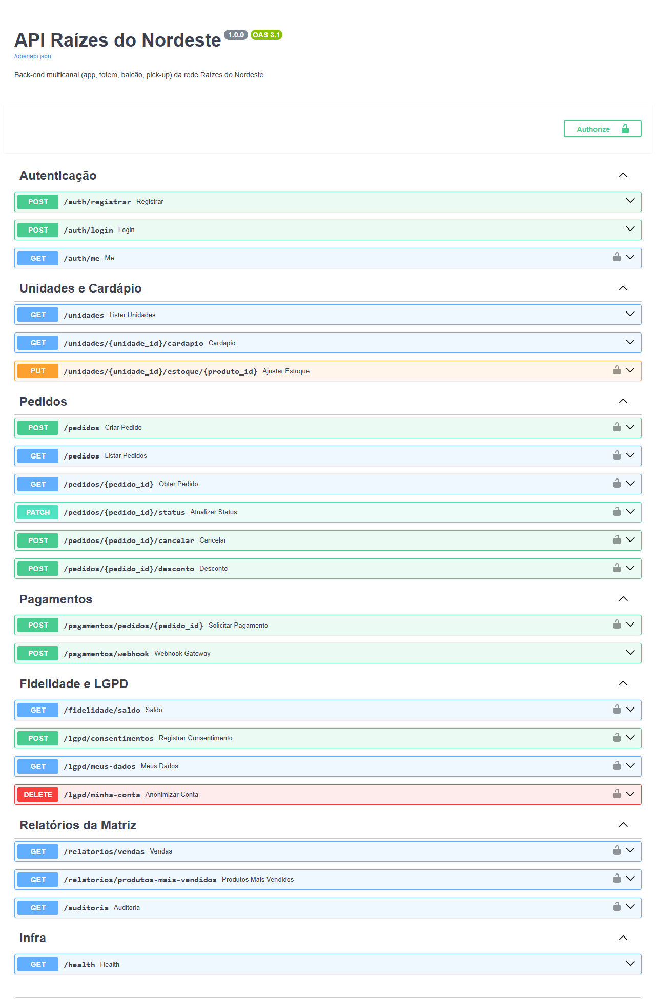

| Disciplina | Eletiva IV – Projeto Multidisciplinar de Análise e Desenvolvimento de Sistemas |
| Aluno(a) | [PREENCHER NOME] |
| RU | [PREENCHER RU] |
| Polo de apoio | [PREENCHER POLO] |
| Semestre | [PREENCHER SEMESTRE] |
| Professor(a) | [PREENCHER PROFESSOR] |
| Repositório | https://github.com/PedroRyanMagalhaes/raizes-do-nordeste-api |
A Raízes do Nordeste nasceu como uma lanchonete familiar em Recife e hoje é uma rede em expansão, presente em capitais e cidades do interior. O cliente compra por quatro canais: aplicativo (pedidos antecipados, promoções e fidelidade), totens de autoatendimento, balcão e retirada rápida (pick-up). Em qualquer canal, ele espera ver o cardápio da unidade, escolher o que está disponível naquele local, fazer o pedido, acompanhar o status e receber o pedido certo.
As unidades não são iguais. Algumas têm cozinha completa e outras operam em formato reduzido. Há produtos sazonais, como os do período junino, e receitas com variações regionais. A matriz precisa de padronização, rastreabilidade e transparência: vendas por unidade e região, produtos mais vendidos, relatórios financeiros e auditoria de cancelamentos, descontos e ajustes. Some-se a isso um programa de fidelidade que deve respeitar a LGPD e o processamento de pagamentos feito por um serviço externo.
| Ator | Descrição | Interação principal |
|---|---|---|
| Cliente | Consumidor final identificado | App e pick-up: cardápio, pedido, pagamento, acompanhamento, fidelidade, direitos LGPD |
| Totem | Conta de serviço do equipamento de autoatendimento de uma unidade | Registra pedidos anônimos da própria loja |
| Atendente | Funcionário de balcão | Registra pedidos no balcão, acompanha a fila |
| Cozinha | Equipe de preparo | Atualiza status: em preparo → pronto → entregue |
| Gerente | Responsável pela unidade | Ajusta estoque, aplica desconto e cancela pedidos pagos (com auditoria) |
| Administrador (Matriz) | Franqueadora | Relatórios consolidados e consulta da auditoria |
| Gateway de pagamento | Sistema externo | Recebe a solicitação de cobrança e devolve o resultado por webhook |
No horário de pico, ficar indisponível significa perder faturamento, travar a loja e desgastar a marca. Uma falha na integração de pagamento pode gerar cobrança em dobro ou um pedido pago que não chega à cozinha. Já o uso indevido de dados pessoais expõe a empresa às sanções da LGPD (art. 52), que vão até 2% do faturamento, limitadas a R$ 50 milhões por infração. Um back-end bem modelado resolve esses três riscos em um ponto central e permite que a rede abra novas unidades sem reescrever sistemas.
Este trabalho segue a trilha Back-end. Ele entrega a análise de requisitos, a modelagem UML e o DER, a arquitetura, a especificação dos endpoints e uma API funcional em Python/FastAPI com 30 testes automatizados. As interfaces (app, totem e painel) não fazem parte do escopo: elas consomem a API documentada em OpenAPI/Swagger. O processamento de pagamento é simulado por um adapter que segue o mesmo contrato de um provedor real.
| ID | Regra | Origem no estudo de caso |
|---|---|---|
| RN01 | Cada unidade tem cardápio próprio (preço, disponibilidade e variação regional) derivado do catálogo da franquia. | “Receitas variam conforme a região” |
| RN02 | Produtos que exigem cozinha completa não são oferecidos em unidades de cozinha reduzida. | “Algumas possuem cozinha completa, outras formato reduzido” |
| RN03 | Produtos sazonais só aparecem e só podem ser vendidos dentro da janela de datas definida. | “Produtos disponíveis em épocas específicas (junino)” |
| RN04 | Um item só pode ser vendido se houver estoque na unidade; a baixa ocorre na criação do pedido e é devolvida no cancelamento. | “Controle de estoque local” |
| RN05 | O canal define quem pode criar o pedido: App/Pick-up = cliente; Totem = conta do totem; Balcão = atendente/gerente. | Múltiplos canais |
| RN06 | O preço do item é “congelado” no pedido; alterações futuras no cardápio não afetam pedidos existentes. | Rastreabilidade financeira |
| RN07 | O pedido segue a máquina de estados: Aguardando pagamento → Pago → Em preparo → Pronto → Entregue (ou Cancelado / Pagamento recusado). | “Acompanhar o status” |
| RN08 | O status “Pago” só é definido pela confirmação do gateway, nunca manualmente. | “O sistema apenas recebe a confirmação” |
| RN09 | Cancelar pedido já pago exige perfil Gerente e dispara solicitação de estorno ao gateway. | Auditoria de operações sensíveis |
| RN10 | Desconto manual: somente Gerente/Admin, antes do pagamento, com motivo obrigatório. | Auditoria de descontos |
| RN11 | Cancelamentos, descontos, ajustes de estoque, resultados de pagamento e ações LGPD geram registro de auditoria. | “Auditoria de operações sensíveis” |
| RN12 | Pontos de fidelidade só são acumulados com consentimento ativo para a finalidade FIDELIDADE (1 ponto por R$ 1,00 pago). | LGPD – consentimento explícito |
| RN13 | Resgate: 20 pontos = R$ 1,00, limitado a 50% do subtotal do pedido. | “Descontos progressivos” (decisão de projeto) |
| RN14 | Funcionários só operam a própria unidade; a matriz (Admin) acessa todas. | Gestão de franquia |
| RN15 | Somente pedidos com pagamento confirmado entram nos relatórios de vendas. | Relatórios financeiros confiáveis |
| ID | Requisito | Prioridade | Implementado |
|---|---|---|---|
| RF01 | Cadastrar cliente com coleta explícita (opt-in) de consentimento para fidelidade. | Alta | Sim |
| RF02 | Autenticar usuários e emitir token de acesso com perfil e unidade. | Alta | Sim |
| RF03 | Listar unidades ativas, com filtro por região. | Média | Sim |
| RF04 | Exibir o cardápio da unidade aplicando RN01–RN04. | Alta | Sim |
| RF05 | Criar pedido informando unidade, canal e itens, validando disponibilidade e estoque. | Alta | Sim |
| RF06 | Garantir que reenvios do mesmo pedido (Idempotency-Key) não criem duplicidade. | Alta | Sim |
| RF07 | Permitir ao cliente acompanhar o status dos próprios pedidos. | Alta | Sim |
| RF08 | Listar a fila de pedidos da unidade com filtro por status e paginação. | Alta | Sim |
| RF09 | Atualizar o status operacional do pedido respeitando a máquina de estados. | Alta | Sim |
| RF10 | Solicitar pagamento ao gateway externo (PIX, crédito, débito). | Alta | Sim |
| RF11 | Receber o resultado do pagamento por webhook autenticado e atualizar o pedido. | Alta | Sim |
| RF12 | Permitir nova tentativa de pagamento após recusa. | Média | Sim |
| RF13 | Cancelar pedido com motivo, devolvendo estoque e pontos e solicitando estorno quando pago. | Alta | Sim |
| RF14 | Aplicar desconto manual auditado. | Média | Sim |
| RF15 | Ajustar estoque da unidade (gerente). | Alta | Sim |
| RF16 | Acumular e resgatar pontos de fidelidade. | Média | Sim |
| RF17 | Conceder e revogar consentimentos por finalidade, mantendo histórico. | Alta | Sim |
| RF18 | Permitir ao titular exportar seus dados (acesso/portabilidade). | Alta | Sim |
| RF19 | Permitir ao titular solicitar eliminação (anonimização) da conta. | Alta | Sim |
| RF20 | Relatório de vendas por unidade e por região, em um período. | Alta | Sim |
| RF21 | Relatório de produtos mais vendidos (geral ou por unidade). | Média | Sim |
| RF22 | Consultar a trilha de auditoria com filtro por ação. | Alta | Sim |
| RF23 | Campanhas segmentadas por perfil/frequência (apenas com consentimento MARKETING e dados anonimizados/agregados). | Baixa | Modelado (evolução) |
| RF24 | Gestão de metas e indicadores por unidade. | Baixa | Evolução futura |
| ID | Categoria | Requisito | Como é atendido |
|---|---|---|---|
| RNF01 | Disponibilidade | 99,9% no horário comercial; sem ponto único de falha. | API stateless (JWT) em múltiplas instâncias atrás de load balancer; banco com réplica; health check /health. |
| RNF02 | Desempenho | p95 < 500 ms para criação de pedido e consulta de cardápio com 300 req/s no pico. | Índices, baixa de estoque com UPDATE atômico, paginação, cache do cardápio (evolução). Validado por teste de carga planejado (JMeter). |
| RNF03 | Escalabilidade | Suportar novas unidades sem mudança de código. | Unidade/cardápio são dados; escala horizontal da API; particionamento de pedidos por data (evolução). |
| RNF04 | Tolerância a falhas | Falha do gateway não pode gerar cobrança dupla nem perda de pedido. | Idempotência em pedidos, pagamentos e webhooks; resposta 503 + Retry-After; pagamento persiste como PENDENTE. |
| RNF05 | Consistência | Não vender mais do que o estoque, mesmo com acessos simultâneos. | UPDATE condicional (quantidade >= n) + transação com rollback. |
| RNF06 | Segurança | Autenticação forte e autorização por perfil. | JWT assinado com expiração; senhas PBKDF2-SHA256 (390 mil iterações); RBAC; mensagens genéricas de login. |
| RNF07 | Segurança | Prevenir acesso a dados de terceiros (IDOR). | Verificação de dono/unidade em cada consulta; retorno 404 para recursos de outros clientes. |
| RNF08 | Segurança | Webhook do gateway não pode ser forjado. | Assinatura HMAC-SHA256 do corpo, comparação em tempo constante. |
| RNF09 | Privacidade (LGPD) | Consentimento explícito, revogável e comprovável; minimização e anonimização. | Tabela de consentimentos append-only; anonimização preservando dados fiscais; exportação de dados. |
| RNF10 | Auditabilidade | Operações sensíveis rastreáveis (quem, quando, o quê, por quê). | Log de auditoria gravado na mesma transação da operação. |
| RNF11 | Observabilidade | Rastrear requisições ponta a ponta. | Middleware com X-Request-ID e latência em log estruturado. |
| RNF12 | Manutenibilidade | Código em camadas e testável. | Routers (HTTP) / Services (regras) / Models (persistência); 30 testes automatizados. |
| RNF13 | Interoperabilidade | Contrato da API documentado para front-ends e parceiros. | OpenAPI 3.1 gerado automaticamente (Swagger em /docs). |
| RNF14 | Portabilidade | Configuração por ambiente, sem segredos no código. | Variáveis de ambiente (12-Factor); SQLite em dev, PostgreSQL em produção. |
| Ambiguidade | Decisão | Justificativa |
|---|---|---|
| Quando baixar o estoque: na criação ou no pagamento? | Na criação (reserva), devolvendo no cancelamento. | Evita vender o último item a dois clientes enquanto um deles paga; no pico isso é frequente. |
| Estoque de insumos ou de produtos? | Estoque por produto pronto/porção por unidade. | Atende o recorte do estudo; ficha técnica (insumos) é evolução futura. |
| Pedido no totem é de cliente identificado? | Totem cria pedido anônimo com conta de serviço da unidade. | Agilidade no autoatendimento e minimização de dados (LGPD). |
| “Considerar idade e perfil” na fidelidade conflita com privacidade. | Idade opcional; segmentação só com consentimento MARKETING e preferencialmente em dados agregados. | Princípios de finalidade e necessidade (LGPD art. 6º). |
| Excluir conta apaga pedidos? | Não: anonimiza o titular e preserva o pedido. | Obrigação legal fiscal (LGPD art. 16, I) e consistência dos relatórios. |
| Monólito ou microsserviços? | Monólito modular, pronto para extração. | Equipe pequena e domínio ainda em evolução; módulos isolados permitem extrair “Pagamentos” ou “Relatórios” depois. |
flowchart LR
Cliente([👤 Cliente])
Totem([🖥️ Totem])
Atendente([👤 Atendente])
Cozinha([👤 Cozinha])
subgraph Sistema["Sistema Raízes do Nordeste (API)"]
direction TB
UC1((Consultar cardápio))
UC2((Realizar pedido))
UC6((Acumular / resgatar pontos))
UC3((Pagar pedido))
UC4((Acompanhar status))
UC5((Consentimento e dados LGPD))
UC7((Atualizar status de preparo))
UC8((Cancelar pedido))
UC9((Aplicar desconto))
UC10((Ajustar estoque))
UC11((Emitir relatórios))
UC12((Consultar auditoria))
UC13((Confirmar pagamento))
end
Gerente([👤 Gerente])
Admin([👤 Admin Matriz])
Gateway([⚙️ Gateway de Pagamento])
Cliente --- UC1 & UC2 & UC3 & UC4 & UC5 & UC6
Totem --- UC2 & UC3
Atendente --- UC2 & UC7
Cozinha --- UC7
UC8 & UC9 & UC10 --- Gerente
UC11 & UC12 --- Admin
UC13 --- Gateway
UC2 -. include .-> UC1
UC3 -. include .-> UC13
UC6 -. extend .-> UC2
| Ator principal | Cliente (App/Pick-up), Totem ou Atendente (Balcão) |
| Pré-condição | Usuário autenticado; unidade ativa. |
| Fluxo principal | 1. Ator consulta o cardápio (UC1). 2. Envia unidade, canal, itens e (opcional) pontos a usar, com cabeçalho Idempotency-Key. 3. Sistema valida perfil × canal (RN05) e unidade (RN14). 4. Valida disponibilidade (RN01–RN03). 5. Baixa estoque atomicamente (RN04). 6. Calcula subtotal com preço da unidade (RN06) e desconto por pontos (RN13). 7. Registra o pedido como AGUARDANDO_PAGAMENTO e retorna 201. |
| Fluxos alternativos | A1. Chave repetida → retorna o pedido original (200). A2. Produto indisponível → 422. A3. Estoque insuficiente → 409 e rollback de todas as baixas. A4. Canal incompatível → 403. A5. Saldo de pontos insuficiente → 422. |
| Pós-condição | Pedido criado, estoque reservado, pontos debitados (se houver). |
classDiagram
direction TB
class Unidade {
+id: int
+nome: str
+cidade: str
+uf: str
+regiao: str
+tipoCozinha: TipoCozinha
+ativa: bool
}
class Produto {
+id: int
+nome: str
+categoria: str
+precoBase: Decimal
+requerCozinhaCompleta: bool
+disponivelDe: date
+disponivelAte: date
}
class ItemCardapio {
+preco: Decimal
+ativo: bool
+variacaoRegional: str
}
class Estoque {
+quantidade: int
+atualizadoEm: datetime
}
class Usuario {
+id: int
+nome: str
+email: str
+perfil: Perfil
+dataNascimento: date
+anonimizado: bool
}
class Pedido {
+id: int
+canal: Canal
+status: StatusPedido
+subtotal: Decimal
+desconto: Decimal
+total: Decimal
+pontosUtilizados: int
+idempotencyKey: str
+transicionar(novo)
+cancelar(motivo)
}
class ItemPedido {
+quantidade: int
+precoUnitario: Decimal
}
class Pagamento {
+valor: Decimal
+status: StatusPagamento
+metodo: str
+idempotencyKey: str
+gatewayRef: str
}
class ContaFidelidade {
+saldoPontos: int
}
class TransacaoPontos {
+pontos: int
+tipo: str
}
class Consentimento {
+finalidade: Finalidade
+concedido: bool
+versaoTermo: str
+registradoEm: datetime
}
class LogAuditoria {
+acao: str
+entidade: str
+entidadeId: int
+detalhes: json
+criadoEm: datetime
}
class GatewayPagamento {
<<interface>>
+solicitarCobranca(valor, metodo, chave) str
+solicitarEstorno(ref)
}
class GatewayFake
Unidade "1" *-- "0..*" ItemCardapio
Produto "1" -- "0..*" ItemCardapio
Unidade "1" *-- "0..*" Estoque
Produto "1" -- "0..*" Estoque
Unidade "1" -- "0..*" Pedido
Usuario "0..1" -- "0..*" Pedido : cliente
Pedido "1" *-- "1..*" ItemPedido
ItemPedido "0..*" -- "1" Produto
Pedido "1" -- "0..*" Pagamento
Usuario "1" -- "0..1" ContaFidelidade
ContaFidelidade "1" *-- "0..*" TransacaoPontos
Usuario "1" -- "0..*" Consentimento
Usuario "0..1" -- "0..*" LogAuditoria : autor
GatewayPagamento <|.. GatewayFake
Pagamento ..> GatewayPagamento : usa
erDiagram
UNIDADES ||--o{ ITENS_CARDAPIO : oferece
PRODUTOS ||--o{ ITENS_CARDAPIO : compoe
UNIDADES ||--o{ ESTOQUES : controla
PRODUTOS ||--o{ ESTOQUES : estocado
UNIDADES ||--o{ USUARIOS : lota
UNIDADES ||--o{ PEDIDOS : recebe
USUARIOS |o--o{ PEDIDOS : faz
PEDIDOS ||--|{ ITENS_PEDIDO : contem
PRODUTOS ||--o{ ITENS_PEDIDO : referencia
PEDIDOS ||--o{ PAGAMENTOS : possui
USUARIOS ||--o| CONTAS_FIDELIDADE : tem
CONTAS_FIDELIDADE ||--o{ TRANSACOES_PONTOS : registra
USUARIOS ||--o{ CONSENTIMENTOS : concede
USUARIOS |o--o{ LOGS_AUDITORIA : gera
UNIDADES { int id PK varchar nome varchar cidade char uf varchar regiao "IDX" enum tipo_cozinha bool ativa }
PRODUTOS { int id PK varchar nome varchar categoria numeric preco_base bool requer_cozinha_completa date disponivel_de date disponivel_ate }
ITENS_CARDAPIO { int id PK int unidade_id FK int produto_id FK numeric preco bool ativo varchar variacao_regional }
ESTOQUES { int id PK int unidade_id FK int produto_id FK int quantidade timestamptz atualizado_em }
USUARIOS { int id PK varchar email UK varchar senha_hash enum perfil int unidade_id FK date data_nascimento bool anonimizado }
PEDIDOS { int id PK int unidade_id FK int cliente_id FK int criado_por_id FK enum canal enum status "IDX" numeric subtotal numeric desconto numeric total int pontos_utilizados varchar idempotency_key UK timestamptz criado_em "IDX" }
ITENS_PEDIDO { int id PK int pedido_id FK int produto_id FK int quantidade numeric preco_unitario }
PAGAMENTOS { int id PK int pedido_id FK numeric valor enum status varchar metodo varchar idempotency_key UK varchar gateway_ref UK }
EVENTOS_GATEWAY { int id PK varchar evento_id UK timestamptz recebido_em }
CONTAS_FIDELIDADE { int id PK int usuario_id FK "UK" int saldo_pontos }
TRANSACOES_PONTOS { int id PK int conta_id FK int pedido_id FK int pontos varchar tipo }
CONSENTIMENTOS { int id PK int usuario_id FK enum finalidade bool concedido varchar versao_termo timestamptz registrado_em }
LOGS_AUDITORIA { int id PK int usuario_id FK varchar acao "IDX" varchar entidade int entidade_id text detalhes timestamptz criado_em "IDX" }
Restrições de unicidade importantes: (unidade_id, produto_id) em ITENS_CARDAPIO e ESTOQUES (um preço e um saldo por produto por loja); idempotency_key em PEDIDOS e PAGAMENTOS; gateway_ref em PAGAMENTOS; evento_id em EVENTOS_GATEWAY (deduplicação de webhooks). Valores monetários usam NUMERIC(10,2), nunca ponto flutuante.
flowchart TB
subgraph Canais
APP[App mobile]
TOT[Totens]
BAL[PDV Balcão]
PAI[Painel Matriz / Cozinha]
end
CDN[CDN + WAF] --> LB[Load Balancer / API Gateway<br/>TLS, rate limit]
APP & TOT & BAL & PAI --> CDN
LB --> API1[API Raízes<br/>instância 1]
LB --> API2[API Raízes<br/>instância N]
subgraph API["Monólito modular (FastAPI)"]
direction LR
R[Routers HTTP] --> S[Services<br/>regras de negócio] --> M[Models / ORM]
end
API1 -.-> API
API1 & API2 --> PG[(PostgreSQL primário)]
PG -- replicação --> RR[(Réplica de leitura<br/>relatórios)]
API1 & API2 --> REDIS[(Redis<br/>cache de cardápio)]
API1 & API2 -- cobrança/estorno --> GW[[Gateway de pagamento externo]]
GW -- webhook HMAC --> LB
API1 & API2 --> OBS[Logs + métricas<br/>X-Request-ID]
Estilo: monólito modular em camadas. A API é organizada em Routers (camada HTTP, validação e códigos de status), Services (regras de negócio, transações) e Models (persistência). A escolha de monólito, em vez de microsserviços desde o início, segue a recomendação de Fowler (“MonolithFirst”): o domínio ainda está sendo descoberto, a equipe é pequena e microsserviços trariam custo de rede, consistência distribuída e operação. Como cada módulo (pedidos, pagamentos, fidelidade, relatórios) tem fronteira clara, ele pode ser extraído depois, caso uma parte precise escalar de forma independente.
Padrões de projeto aplicados: Adapter/Strategy no gateway de pagamento (interface GatewayPagamento, que permite trocar de provedor sem alterar o domínio); State Machine no ciclo de vida do pedido; Unit of Work (sessão SQLAlchemy por requisição); Dependency Injection do FastAPI para banco, usuário autenticado e autorização; Idempotent Receiver para webhooks; DTOs (Pydantic) separados das entidades.
| Método | Rota | Perfil | Descrição / respostas |
|---|---|---|---|
| POST | /auth/registrar | Público | Cadastra cliente + consentimento. 201 / 409 e-mail duplicado / 422 |
| POST | /auth/login | Público | Retorna JWT. 200 / 401 |
| GET | /auth/me | Autenticado | Dados do usuário logado |
| GET | /unidades?regiao= | Público | Unidades ativas |
| GET | /unidades/{id}/cardapio | Público | Cardápio filtrado por cozinha, sazonalidade e estoque |
| PUT | /unidades/{id}/estoque/{produto} | Gerente, Admin | Ajusta estoque (auditado). 200 / 403 / 404 |
| POST | /pedidos + Idempotency-Key | Por canal (RN05) | Cria pedido. 201 / 200 (repetido) / 403 / 409 estoque / 422 |
| GET | /pedidos?unidade_id=&status=&limit=&offset= | Funcionários | Fila da loja paginada (limit ≤ 100) |
| GET | /pedidos/{id} | Dono / unidade | Acompanhamento. 200 / 404 |
| PATCH | /pedidos/{id}/status | Funcionários | EM_PREPARO, PRONTO, ENTREGUE. 200 / 409 transição inválida / 422 |
| POST | /pedidos/{id}/cancelar | Cliente (não pago) / Gerente | Cancela com motivo, devolve estoque/pontos, estorno. 200 / 403 / 409 |
| POST | /pedidos/{id}/desconto | Gerente, Admin | Desconto manual auditado. 200 / 403 / 409 |
| POST | /pagamentos/pedidos/{id} | Dono / unidade | Solicita cobrança. 202 / 409 / 503 + Retry-After |
| POST | /pagamentos/webhook | Gateway (HMAC) | Resultado APROVADO/RECUSADO. 200 / 401 assinatura / 404 |
| GET | /fidelidade/saldo | Cliente | Saldo de pontos e status do consentimento |
| POST | /lgpd/consentimentos | Cliente | Concede/revoga por finalidade (histórico) |
| GET | /lgpd/meus-dados | Cliente | Exportação dos dados do titular |
| DELETE | /lgpd/minha-conta | Cliente | Anonimização. 204 |
| GET | /relatorios/vendas?inicio=&fim=&agrupar_por= | Admin | Faturamento por unidade ou região |
| GET | /relatorios/produtos-mais-vendidos | Admin | Ranking de produtos |
| GET | /auditoria?acao=&limit=&offset= | Admin | Trilha de auditoria paginada |
| GET | /health | Público | Verificação para o load balancer |
Exemplo de requisição/resposta de criação de pedido:
POST /pedidos
Authorization: Bearer <jwt>
Idempotency-Key: 9f1c2e7a-app-0001
{ "unidade_id": 1, "canal": "APP", "itens": [ { "produto_id": 1, "quantidade": 2 } ], "usar_pontos": 0 }
201 Created
{ "id": 1, "unidade_id": 1, "cliente_id": 7, "canal": "APP", "status": "AGUARDANDO_PAGAMENTO",
"subtotal": "36.00", "desconto": "0.00", "total": "36.00", "pontos_utilizados": 0,
"itens": [ { "produto_id": 1, "quantidade": 2, "preco_unitario": "18.00" } ] }
PostgreSQL (produção) foi escolhido por oferecer transações ACID (pedido, estoque e pagamento precisam ser consistentes), tipo NUMERIC exato para dinheiro, réplicas de leitura nativas e particionamento declarativo. Acesso via SQLAlchemy 2.0, o que permite usar SQLite em desenvolvimento e nos testes sem mudar código. Em produção, o esquema seria versionado com Alembic (migrations).
Desempenho em alto volume: índices em pedidos(unidade_id, status, criado_em) sustentam a fila da loja e os relatórios por período. Os filtros de data usam intervalo semiaberto (>= início AND < fim+1), o que mantém o uso do índice. Toda listagem é paginada com teto de 100 ou 200 itens. Com o crescimento da rede, a evolução prevista é: (1) particionar pedidos e logs_auditoria por mês; (2) direcionar os relatórios para a réplica de leitura ou para um data warehouse alimentado por CDC, para não competir com o transacional no pico; (3) trocar a paginação por offset por paginação keyset (cursor) na auditoria.
| Risco / requisito | Controle implementado |
|---|---|
| Senhas vazadas | Hash PBKDF2-SHA256 com salt e 390 mil iterações (OWASP Password Storage Cheat Sheet) |
| Enumeração de usuários | Mesma mensagem “Credenciais inválidas” para e-mail inexistente e senha errada |
| Escalonamento de privilégio | Cadastro público sempre cria perfil CLIENTE; RBAC por dependência exigir_perfil |
| IDOR (OWASP API1) | Verificação de dono do pedido e de unidade do funcionário em toda consulta |
| Webhook forjado | HMAC-SHA256 do corpo bruto + hmac.compare_digest |
| Injeção SQL | Consultas parametrizadas pelo ORM; nenhuma concatenação de SQL |
| Abuso de recursos (OWASP API4) | Limites de paginação, limite de itens e quantidades por pedido; rate limit no API Gateway |
| Segredos expostos | Chaves via variáveis de ambiente; .env no .gitignore |
| LGPD – consentimento (art. 7º, I e 8º) | Opt-in explícito (nunca pré-marcado), por finalidade, com versão do termo e histórico imutável |
| LGPD – revogação (art. 8º §5º) | Endpoint de revogação; acúmulo de pontos cessa imediatamente |
| LGPD – acesso/portabilidade (art. 18, II e V) | GET /lgpd/meus-dados |
| LGPD – eliminação (art. 18, VI) × guarda fiscal (art. 16, I) | Anonimização: remove nome, e-mail, data de nascimento e credencial; mantém o pedido sem vínculo identificável |
| LGPD – auditoria de acesso | Exportação e anonimização registradas no log de auditoria |
| Minimização (art. 6º, III) | Pedidos de totem/balcão não exigem identificação; data de nascimento opcional |
UPDATE estoques SET quantidade = quantidade - n WHERE ... AND quantidade >= n. A operação é atômica no banco, não precisa de lock na aplicação e o rowcount diz se houve sucesso. Se qualquer item falhar, a transação inteira sofre rollback.Idempotency-Key; (2) pagamento com uma chave por tentativa, repassada ao gateway; (3) webhook deduplicado por evento_id UNIQUE. Assim, retentativas de rede, de cliente ou do gateway nunca duplicam cobrança, pontos ou mudança de status.503 com Retry-After. Na evolução, um circuit breaker e um job de reconciliação consultam o status das transações pendentes e reenviam estornos.X-Request-ID e tem a latência registrada em log, o que permite montar alertas de p95 e taxa de erro.raizes-do-nordeste-api/ ├── app/ │ ├── main.py # FastAPI, lifespan, middleware de log/correlação, /health │ ├── config.py # configuração por variáveis de ambiente │ ├── database.py # engine, sessão por requisição │ ├── models.py # 13 entidades ORM + enums │ ├── schemas.py # DTOs Pydantic (entrada/saída) │ ├── security.py # hash de senha, JWT, RBAC, escopo de unidade │ ├── seed.py # dados de demonstração (2 unidades, 5 produtos, 6 usuários) │ ├── routers/ # auth, unidades, pedidos, pagamentos, fidelidade (LGPD), relatorios │ └── services/ # pedidos, pagamentos, fidelidade, auditoria ├── tests/ # conftest.py + test_api.py (CT-01 a CT-30) ├── scripts/demo_fluxo.py # jornada completa via HTTP contra o servidor ├── docs/ # este documento e evidências ├── requirements.txt └── README.md
| Decisão | Alternativa descartada | Motivo |
|---|---|---|
| Python + FastAPI | Java/Spring Boot, Node/Express | Validação e OpenAPI automáticos, tipagem, produtividade; desempenho ASGI adequado ao volume |
| Regras em services, não nos routers | Lógica no controller | Testabilidade e reuso (ex.: futuro consumidor de fila usando a mesma regra) |
| Decimal para dinheiro | float | float gera erro de arredondamento (0,1 + 0,2 ≠ 0,3) |
| Auditoria na mesma transação | Log assíncrono | Garante que não existe operação sensível sem registro, nem registro de operação desfeita |
| Consentimento append-only | Campo booleano no usuário | A LGPD exige comprovar quando e qual termo foi aceito ou revogado |
| 404 para pedido de outro cliente | 403 | Não revela a existência do recurso (defesa contra enumeração) |
| Gateway por interface (Adapter) | Chamada direta ao SDK do provedor | Troca de provedor sem mexer no domínio; testes sem dependência externa |
python -m venv .venv && .venv\Scripts\activate pip install -r requirements.txt python -m app.seed # banco com dados de demonstração uvicorn app.main:app --reload # Swagger em http://localhost:8000/docs pytest -v # 30 testes automatizados python scripts/demo_fluxo.py http://localhost:8000 # jornada completa
Usuários de demonstração (senha Senha@123): admin@raizes.com, gerente.recife@raizes.com, atendente.recife@raizes.com, cozinha.recife@raizes.com, totem01.recife@raizes.com, gerente.sp@raizes.com.

A estratégia segue a pirâmide de testes, com prioridade definida por risco. Os riscos mais caros neste negócio são: cobrança duplicada, venda sem estoque, vazamento de dados pessoais e indisponibilidade no pico.
| Nível / tipo | Objetivo | Ferramenta | Situação |
|---|---|---|---|
| Integração da API (funcionais) | Validar regras RN01–RN15 ponta a ponta (HTTP → banco) | pytest + FastAPI TestClient, SQLite em memória isolado por teste | 30 casos executados – 100% aprovados |
| Integração com serviço externo | Aprovação, recusa, indisponibilidade, webhook duplicado e forjado | pytest + GatewayFake (simula o contrato do provedor) | Executado (CT-16 a CT-20) |
| Segurança e privacidade | Autenticação, autorização, IDOR, HMAC, LGPD | pytest (executado); OWASP ZAP baseline/API scan (planejado) | Executado (CT-02 a CT-05, CT-15, CT-19, CT-25 a CT-28) |
| Ponta a ponta (E2E) | Jornada completa contra o servidor real | scripts/demo_fluxo.py (httpx) / coleção Postman | Executado (seção 5.4) |
| Desempenho / carga | Validar RNF02 no pico | Apache JMeter ou k6 | Planejado (5.3) |
| Disponibilidade / resiliência | Queda de instância e do gateway | Testes de caos em homologação | Planejado (5.3) |
Legenda: (+) caso positivo, (−) caso negativo/erro. Cada caso corresponde a uma função test_ctXX_... em tests/test_api.py.
| ID | Cenário | Entrada / passos | Saída esperada | Req. | Result. |
|---|---|---|---|---|---|
| CT01 (+) | Registro e login de cliente | POST /auth/registrar; POST /auth/login; GET /auth/me | 201; token; perfil CLIENTE | RF01-02 | OK |
| CT02 (−) | Login com senha errada | Senha inválida | 401 “Credenciais inválidas” (sem revelar motivo) | RNF06 | OK |
| CT03 (−) | Rota protegida sem token | GET /pedidos/1 sem Authorization | 401 | RNF06 | OK |
| CT04 (−) | Token adulterado | JWT com assinatura falsa | 401 | RNF06 | OK |
| CT05 (−) | Cliente acessa relatório da matriz | GET /relatorios/vendas como cliente | 403 | RN14 | OK |
| CT06 (+/−) | Cardápio respeita cozinha | Cardápio Recife (completa) × SP (reduzida) | Cuscuz só em Recife | RN02 | OK |
| CT07 (+/−) | Produto sazonal | Cardápio em 20/06 e 20/10 | Canjica só em junho | RN03 | OK |
| CT08 (+) | Preço por unidade | Tapioca Recife × SP | 18,00 × 21,00 | RN01 | OK |
| CT09 (+) | Pedido pelo app | 2 tapiocas + 1 suco | 201; total 44,00; estoque 50→48 | RF05, RN04 | OK |
| CT10 (+) | Reenvio com mesma Idempotency-Key | 2 POST iguais | 201 e 200, mesmo id, 1 pedido no banco | RF06 | OK |
| CT11 (−) | Estoque insuficiente | Estoque bolo = 3; pede suco + 5 bolos | 409; suco NÃO baixado (rollback) | RNF05 | OK |
| CT12 (−) | Produto indisponível na unidade | Cuscuz em SP | 422 | RN02 | OK |
| CT13 (−) | Canal incompatível | Cliente usa canal BALCAO | 403 | RN05 | OK |
| CT14 (+/−) | Totem e balcão | Totem/atendente Recife em Recife; atendente Recife em SP | 201, 201, 403 | RN05, RN14 | OK |
| CT15 (−) | Cliente vê pedido de outro (IDOR) | Cliente B consulta pedido de A | 404 | RNF07 | OK |
| CT16 (+) | Fluxo completo até entrega | Pedido → pagamento → webhook APROVADO → preparo → pronto → entregue | Status final ENTREGUE | RF07-11 | OK |
| CT17 (+/−) | Pagamento recusado e nova tentativa | Webhook RECUSADO; nova solicitação; APROVADO | PAGAMENTO_RECUSADO → nova ref → PAGO | RF12 | OK |
| CT18 (−/+) | Gateway fora do ar | Gateway falha; depois volta | 503 + Retry-After; retentativa 202; 1 única cobrança | RNF04 | OK |
| CT19 (−) | Webhook forjado | Assinatura inválida | 401 | RNF08 | OK |
| CT20 (−) | Webhook duplicado | Mesmo evento_id 2× | “DUPLICADO”; pontos creditados 1× (22) | RNF04 | OK |
| CT21 (−) | Pular etapas | EM_PREPARO sem pagamento; PAGO manual | 409; 422 | RN07-08 | OK |
| CT22 (+/−) | Cancelar pedido pago | Atendente tenta; gerente cancela | 403; 200 + estorno + auditoria + estoque devolvido | RN09, RN11 | OK |
| CT23 (+/−) | Desconto manual | Atendente; gerente R$ 3,00 | 403; total 15,00 + auditoria | RN10 | OK |
| CT24 (+/−) | Estoque de outra unidade | Gerente SP ajusta Recife e SP | 403; 200 | RN14 | OK |
| CT25 (−) | Sem consentimento não acumula | Cliente sem opt-in compra | Saldo 0 | RN12 | OK |
| CT26 (+) | Resgate com teto de 50% | 220 pontos em pedido de 8,00 | Desconto 4,00; 80 pontos usados; saldo 140 | RN13 | OK |
| CT27 (−) | Revogação de consentimento | Revoga e compra | Saldo 0 | RF17 | OK |
| CT28 (+) | Exportação e anonimização LGPD | GET meus-dados; DELETE minha-conta; login | Dados exportados; 204; login 401; pedido preservado | RF18-19 | OK |
| CT29 (+) | Relatórios da matriz | 2 pedidos pagos + 1 não pago | NORDESTE 54,00; SUDESTE 11,00; top = tapioca (3) | RF20-21, RN15 | OK |
| CT30 (+/−) | Fila paginada | 5 pedidos; limit=2; limit=500 | total 5, 2 itens; 422 | RF08 | OK |
| ID | Tipo | Cenário | Critério de aceitação | Ferramenta |
|---|---|---|---|---|
| NF01 | Carga (pico do café da manhã) | Rampa até 300 req/s por 15 min: 60% cardápio, 30% criação de pedido, 10% consulta de status | p95 < 500 ms; erro < 0,5% | JMeter / k6 |
| NF02 | Concorrência de estoque | 200 usuários simultâneos comprando o último lote de 50 itens | Exatamente 50 vendidos; nenhum estoque negativo | JMeter |
| NF03 | Estresse | Aumentar a carga até degradar | Ponto de ruptura documentado; recuperação sem intervenção manual | k6 |
| NF04 | Resiliência | Derrubar 1 de 3 instâncias durante a carga | Sem indisponibilidade percebida (erro < 1% por até 30 s) | Chaos test |
| NF05 | Resiliência do gateway | Gateway com latência de 10 s ou fora do ar | Criação de pedido não afetada; 503 rápido no pagamento; nenhuma cobrança duplicada | Mock com toxiproxy |
| SEG01 | Varredura DAST | OWASP ZAP API scan a partir do /openapi.json | Nenhum alerta High/Medium aberto | OWASP ZAP |
| SEG02 | Força bruta | 100 tentativas de login/min no mesmo usuário | Rate limit (429) e alerta | API Gateway + JMeter |
| SEG03 | Dependências | Auditoria de bibliotecas vulneráveis | Nenhuma CVE crítica | pip-audit / Dependabot |
| LGPD01 | Privacidade | Revisar se logs e relatórios contêm dados pessoais | Nenhum e-mail/nome em logs de aplicação | Revisão + grep nos logs |
platform win32 -- Python 3.13.7, pytest-9.1.1, pluggy-1.6.0 -- C:\Users\prmagalhaes\Desktop\extracode\Projeto_faculdade\raizes-do-nordeste-api\.venv\Scripts\python.exe test_ct01_registro_e_login_cliente PASSED [ 3%] test_ct02_login_senha_errada_retorna_401_sem_revelar_motivo PASSED [ 6%] test_ct03_endpoint_protegido_sem_token_retorna_401 PASSED [ 10%] test_ct04_token_adulterado_retorna_401 PASSED [ 13%] test_ct05_cliente_nao_acessa_relatorio_da_matriz PASSED [ 16%] test_ct06_cardapio_respeita_tipo_de_cozinha PASSED [ 20%] test_ct07_produto_sazonal_so_aparece_na_janela PASSED [ 23%] test_ct08_preco_varia_por_unidade PASSED [ 26%] test_ct09_cliente_cria_pedido_pelo_app_e_estoque_e_baixado PASSED [ 30%] test_ct10_pedido_com_mesma_idempotency_key_nao_duplica PASSED [ 33%] test_ct11_estoque_insuficiente_retorna_409_e_nao_baixa_nada PASSED [ 36%] test_ct12_produto_indisponivel_na_unidade_retorna_422 PASSED [ 40%] test_ct13_canal_incompativel_com_perfil_retorna_403 PASSED [ 43%] test_ct14_totem_e_balcao_registram_pedido_da_propria_unidade PASSED [ 46%] test_ct15_cliente_nao_ve_pedido_de_outro_cliente PASSED [ 50%] test_ct16_fluxo_completo_pagamento_aprovado_ate_entrega PASSED [ 53%] test_ct17_pagamento_recusado_permite_nova_tentativa PASSED [ 56%] test_ct18_gateway_fora_do_ar_retorna_503_e_retentativa_funciona PASSED [ 60%] test_ct19_webhook_com_assinatura_invalida_retorna_401 PASSED [ 63%] test_ct20_webhook_duplicado_nao_credita_pontos_duas_vezes PASSED [ 66%] test_ct21_cozinha_nao_pode_pular_etapas PASSED [ 70%] test_ct22_cancelamento_de_pedido_pago_exige_gerente_e_gera_auditoria_e_estorno PASSED [ 73%] test_ct23_desconto_manual_so_gerente_e_auditado PASSED [ 76%] test_ct24_gerente_nao_ajusta_estoque_de_outra_unidade PASSED [ 80%] test_ct25_sem_consentimento_nao_acumula_pontos PASSED [ 83%] test_ct26_resgate_de_pontos_limitado_a_50_porcento PASSED [ 86%] test_ct27_revogar_consentimento_interrompe_acumulo PASSED [ 90%] test_ct28_anonimizacao_remove_dados_pessoais_e_bloqueia_login PASSED [ 93%] test_ct29_relatorio_vendas_por_regiao_e_mais_vendidos PASSED [ 96%] test_ct30_listagem_da_fila_da_loja_e_paginada PASSED [100%] ======================= 30 passed, 1 warning in 42.05s ========================
Relatório JUnit XML: docs/evidencias/relatorio-testes.xml. Saída completa: docs/evidencias/execucao-testes.txt.
1. Cliente se cadastra com consentimento de fidelidade
POST /auth/registrar -> HTTP 201
2. Lista unidades
GET /unidades -> HTTP 200
3. Cardápio da unidade Recife
GET /unidades/1/cardapio -> HTTP 200
4. Pedido pelo APP (com Idempotency-Key)
POST /pedidos -> HTTP 201
{
"id": 1,
"unidade_id": 1,
"cliente_id": 7,
"canal": "APP",
"status": "AGUARDANDO_PAGAMENTO",
"subtotal": "36.00",
"desconto": "0.00",
"total": "36.00",
"pontos_utilizados": 0,
"criado_em": "2026-10-12T23:42:09.767347",
"itens": [
{
"produto_id": 1,
"quantidade": 2,
"preco_unitario": "18.00"
}
]
}
5. Reenvio da mesma requisição (rede instável) -> mesmo pedido, HTTP 200
POST /pedidos -> HTTP 200
6. Solicita pagamento PIX ao gateway externo
POST /pagamentos/pedidos/1 -> HTTP 202
7. Gateway confirma via webhook assinado (HMAC)
POST /pagamentos/webhook -> HTTP 200
8. Webhook com assinatura falsa -> 401
POST /pagamentos/webhook -> HTTP 401
9. Cozinha/atendimento: EM_PREPARO
PATCH /pedidos/1/status -> HTTP 200
9. Cozinha/atendimento: PRONTO
PATCH /pedidos/1/status -> HTTP 200
9. Cozinha/atendimento: ENTREGUE
PATCH /pedidos/1/status -> HTTP 200
10. Saldo de pontos do cliente
GET /fidelidade/saldo -> HTTP 200
{
"saldo_pontos": 36,
"consentimento_fidelidade": true
}
11. Matriz: vendas por região
GET /relatorios/vendas?inicio=2026-01-01&fim=2026-12-31&agrupar_por=regiao -> HTTP 200
[
{
"chave": "NORDESTE",
"quantidade_pedidos": 1,
"faturamento": "36.00"
}
]
12. Matriz: trilha de auditoria
GET /auditoria?limit=3 -> HTTP 200
Saída completa (com os corpos JSON): docs/evidencias/fluxo-http.txt.
O projeto mostrou que, no caso da Raízes do Nordeste, a dificuldade não está em “fazer um CRUD de pedidos”, mas nas regras que ficam entre as linhas do estudo de caso. Um mesmo pedido pode chegar por quatro canais com permissões diferentes. O cardápio muda por loja, por estação e por estrutura de cozinha. O pagamento é assíncrono e pode falhar de várias formas. A fidelidade precisa equilibrar o interesse comercial com a LGPD.
Interpretar ambiguidades (quando reservar o estoque, como tratar totem anônimo, como conciliar “idade e perfil” com privacidade) e documentar cada decisão com justificativa. Também foi um desafio manter a máquina de estados coerente entre cancelamento, estorno e devolução de estoque e pontos.
Respondendo à pergunta do estudo de caso (“a solução se sustentaria em uma entrevista técnica?”): cada decisão aqui tem uma alternativa considerada, uma justificativa ligada ao negócio e um teste automatizado que a comprova. Esse é o critério usado para considerar a solução sustentável.
BRASIL. Lei nº 13.709, de 14 de agosto de 2018. Lei Geral de Proteção de Dados Pessoais (LGPD). Brasília, DF, 2018. Disponível em: https://www.planalto.gov.br/ccivil_03/_ato2015-2018/2018/lei/l13709.htm.
FOWLER, M. UML Essencial: um breve guia para linguagem padrão. 3. ed. Porto Alegre: Bookman, 2005.
FOWLER, M. MonolithFirst. 2015. Disponível em: https://martinfowler.com/bliki/MonolithFirst.html.
GAMMA, E.; HELM, R.; JOHNSON, R.; VLISSIDES, J. Padrões de projetos: soluções reutilizáveis de software orientado a objetos. Porto Alegre: Bookman, 2000.
LARMAN, C. Utilizando UML e padrões. 3. ed. Porto Alegre: Bookman, 2007.
LEDUR, C. L. Análise e projeto de sistemas. Barueri: Manole, 2017.
OWASP FOUNDATION. OWASP API Security Top 10 – 2023. Disponível em: https://owasp.org/API-Security/.
OWASP FOUNDATION. Password Storage Cheat Sheet. Disponível em: https://cheatsheetseries.owasp.org/cheatsheets/Password_Storage_Cheat_Sheet.html.
PRESSMAN, R. S.; MAXIM, B. R. Engenharia de Software: uma abordagem profissional. 9. ed. Porto Alegre: AMGH, 2021.
SOMMERVILLE, I. Engenharia de Software. 10. ed. São Paulo: Pearson, 2018.
STRIPE. Idempotent requests. Disponível em: https://docs.stripe.com/api/idempotent_requests.
FASTAPI. FastAPI documentation. Disponível em: https://fastapi.tiangolo.com/.
SQLALCHEMY. SQLAlchemy 2.0 documentation. Disponível em: https://docs.sqlalchemy.org/en/20/.
WIGGINS, A. The Twelve-Factor App. Disponível em: https://12factor.net/.
sequenceDiagram
autonumber
actor C as Cliente (App)
participant API as API Raízes
participant DB as Banco
participant GW as Gateway externo
C->>API: POST /pedidos (Idempotency-Key)
API->>DB: valida cardápio + UPDATE estoque condicional
API-->>C: 201 AGUARDANDO_PAGAMENTO
C->>API: POST /pagamentos/pedidos/{id} (PIX)
API->>DB: cria Pagamento PENDENTE (chave pedido-N-tentativa-1)
API->>GW: solicitarCobranca(valor, chave)
alt gateway disponível
GW-->>API: gateway_ref
API-->>C: 202 Accepted (gateway_ref)
else timeout / erro
API->>DB: mantém PENDENTE
API-->>C: 503 + Retry-After (repetir usa a mesma chave)
end
GW->>API: POST /pagamentos/webhook (X-Signature HMAC)
API->>API: valida assinatura
API->>DB: INSERT evento_id (UNIQUE) — duplicado? retorna "DUPLICADO"
alt APROVADO
API->>DB: Pagamento APROVADO, Pedido PAGO, credita pontos (se consentido), auditoria
else RECUSADO
API->>DB: Pagamento RECUSADO, Pedido PAGAMENTO_RECUSADO, auditoria
end
API-->>GW: 200
C->>API: GET /pedidos/{id}
API-->>C: status atualizado
stateDiagram-v2 [*] --> AGUARDANDO_PAGAMENTO : pedido criado (estoque reservado) AGUARDANDO_PAGAMENTO --> PAGO : webhook APROVADO AGUARDANDO_PAGAMENTO --> PAGAMENTO_RECUSADO : webhook RECUSADO AGUARDANDO_PAGAMENTO --> CANCELADO : cliente/atendente cancela PAGAMENTO_RECUSADO --> AGUARDANDO_PAGAMENTO : nova tentativa PAGAMENTO_RECUSADO --> CANCELADO : desistência PAGO --> EM_PREPARO : cozinha inicia PAGO --> CANCELADO : gerente cancela (estorno) EM_PREPARO --> PRONTO PRONTO --> ENTREGUE ENTREGUE --> [*] CANCELADO --> [*] : estoque e pontos devolvidos
flowchart TD
A([Início]) --> B{Idempotency-Key<br/>já usada?}
B -- sim --> B1[Retorna pedido original 200] --> Z([Fim])
B -- não --> C{Perfil pode usar<br/>o canal?}
C -- não --> C1[403] --> Z
C -- sim --> D{Unidade ativa e<br/>do funcionário?}
D -- não --> D1[403/404] --> Z
D -- sim --> E[Para cada item]
E --> F{Disponível na unidade?<br/>cozinha + sazonalidade}
F -- não --> F1[Rollback + 422] --> Z
F -- sim --> G{UPDATE estoque<br/>quantidade >= n?}
G -- não --> G1[Rollback + 409] --> Z
G -- sim --> H{Mais itens?}
H -- sim --> E
H -- não --> I{Usar pontos?}
I -- sim --> J[Valida saldo, aplica teto 50%,<br/>debita pontos]
I -- não --> K
J --> K[Calcula total e grava<br/>AGUARDANDO_PAGAMENTO]
K --> L[Commit + 201] --> Z
flowchart LR
subgraph Loja["Unidade (loja)"]
T[Totem<br/>navegador kiosk]
P[PDV Balcão]
K[Tela da cozinha]
end
M[Smartphone<br/>App cliente]
subgraph Nuvem["Nuvem (2 zonas de disponibilidade)"]
WAF[CDN + WAF] --> ALB[Load Balancer]
subgraph Cluster["Cluster de containers (autoscaling)"]
C1[api:1.0 #1]
C2[api:1.0 #2]
C3[api:1.0 #N]
end
ALB --> C1 & C2 & C3
C1 & C2 & C3 --> PGM[(PostgreSQL primário)]
PGM --> PGR[(Réplica / standby)]
C1 & C2 & C3 --> RD[(Redis)]
end
T & P & K & M -- HTTPS --> WAF
C1 & C2 & C3 -- HTTPS --> GW[[Provedor de pagamento]]
GW -- webhook HTTPS --> WAF
[PREENCHER PELO ALUNO – ferramenta utilizada, prompts e trechos aproveitados, conforme exigido nas orientações da atividade.]